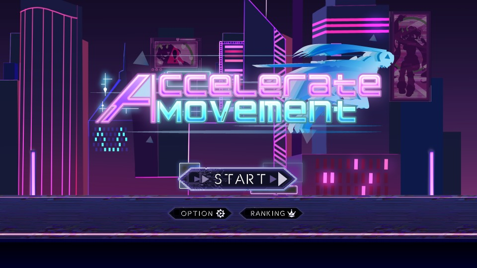

AccelerateMovement完成
敵の出現・攻撃演出と、フェード・ランキング機能を担当。

【要記入】プレイ動画 / 作品ページのリンク（動画があれば EmpireDash と同じ movie の iframe に差し替え）
作品概要
走るほど加速していく2Dの横スクロールアクションゲームです。一定以上のスピードで敵を倒しながら進み、ボスを倒すまでのクリアタイムをランキングで競います。チームで制作し、私は敵の出現・攻撃演出と、シーン遷移のフェード・ランキング機能を担当しました。
使用技術
Unity / C# / UniTask / R3 / LitMotion / NaughtyAttributes / Object Pool / Singleton / ShaderLab（自作シェーダー） / MaterialPropertyBlock / Rigidbody2D
担当内容
- 敵の生成（オブジェクトプール）・移動・攻撃の制御
- 敵の攻撃予告ラインの演出とシェーダー
- ルール画像を使ったシーン遷移フェード（シーンをまたいで共通利用）
- クリアタイムのランキング（保存・並び替え・表示）とリザルト画面
技術解説
- オブジェクトプールで敵を使い回し、生成・破棄のコストを抑制。
- R3のReactivePropertyでプレイヤーの速度を監視し、敵の速度を追従させる。
- LitMotion・UniTaskで攻撃予告やフェードの演出を順番に待ちながら実行。
- 自作シェーダーとMaterialPropertyBlockで、マテリアルを複製せずに透明度・アウトラインを変更。
開発情報
| ジャンル | 加速して進む2D横スクロールアクション（タイムアタック） |
|---|---|
| 開発期間 | 2026年7月〜2026年9月（約1ヶ月半）【要確認】プロジェクトファイルの日付から推定 |
| チーム構成 | 【要記入】例：プログラマー〇名・プランナー〇名・デザイナー〇名 計〇名 |
| 担当役割 | 敵の生成・移動・攻撃演出、シーン遷移フェード、ランキング・リザルト画面 |
| 使用言語・エンジン | C# / Unity（6000.3.8f1） |
| 開発環境 | 【要記入】例：Visual Studio Code / GitHub |
| 公開先 | 【要記入】作品ページのURL（無ければこの行を削除） |
| ソースコード | 実装コードの抜粋（サイト内） |
設計の工夫と選択理由
「何を選んだか」と「なぜ選んだか」、比較した方法をまとめています。
| 設計要素 | 採用した方法 | ねらい | 比較した方法・避けた理由 |
|---|---|---|---|
| 敵の生成 | オブジェクトプール（Stackで管理） | あらかじめ生成した敵を使い回し、足りないときだけ追加で生成する | 出現のたびにInstantiate・Destroy → 生成・破棄が続くと処理負荷やGCが増えるため |
| 敵の速度 | R3のReactivePropertyで速度を監視 | 加速し続けるプレイヤーに合わせて、値が変わったときだけ敵の速度を更新する | 敵が毎フレームプレイヤーの値を直接参照 → クラス同士が密結合になるため |
| ボス戦開始時の敵の片付け | R3で出現終了を通知し、各敵が自分でプールに戻る | プール側は通知するだけで、画面上の敵をまとめて回収できる | 敵を全て検索して非表示にする → 検索の手間がかかり、回収漏れが起きやすいため |
| 攻撃予告・フェードの演出 | LitMotion＋UniTask | フェードイン → アウトラインの縮小など、演出の完了を待って次の処理へ進める | コルーチンの入れ子 → 待ち処理の流れが追いにくいため |
| シーン遷移フェード | DontDestroyOnLoadのSingleton＋ルール画像シェーダー | どのシーンからも同じフェードを呼べ、ルール画像の差し替えだけで演出を変えられる | シーンごとにフェード用オブジェクトを配置 → 設定がばらつき、修正箇所が増えるため |
| マテリアルの値変更 | MaterialPropertyBlock | マテリアルを複製せずに、敵ごとに透明度やアウトラインを変えられる | renderer.materialを直接変更 → 敵ごとにマテリアルが複製されるため |
苦労した点と解決方法
「現象 → 原因 → 対策」の順で、開発中に直面した課題をまとめています。
課題1：ボス戦が始まっても通常の敵が画面に残る【要確認】コードから推定した内容です
| 現象 | ボス戦が始まったあとも、それまでに出現した通常の敵がプレイヤーを追いかけ続けていた。 |
|---|---|
| 原因 | 敵の出現を止めるだけで、すでに出現している敵をプールに戻す処理がなかった。 |
| 対策 | プール側にR3のReactivePropertyを用意し、ボス戦の開始を通知するようにした。 各敵はこの通知を購読して自分でプールに戻るため、プール側で敵を探す必要がなくなった。 |
既知の課題と今後の改善予定
既知の課題
- ランキングのデータはメモリ上に保持しているだけなので、ゲームを終了するとリセットされてしまう。
次に改善したい点と、その理由
- ランキングをJSONファイルに保存し、ゲームを再起動しても記録が残るようにする。
使用ライブラリ・素材
Unityライブラリ
- UniTask（Cysharp）
- R3（Cysharp）
- LitMotion（AnnulusGames）
- NaughtyAttributes（dbrizov）
- NuGetForUnity（GlitchEnzo）※R3の導入に使用
- Spine Runtimes（Esoteric Software）
- AfterImageEffect2D（kan.kikuchi）
- Input System / TextMesh Pro / Universal Render Pipeline / 2D Tilemap（Unity Technologies）
サウンド
- OpenTracks / Audiostock
フォント
- Noto Sans JP / Big Shoulders Stencil / DSEG7 Classic Mini / Digital Desolation Plus / なぎの